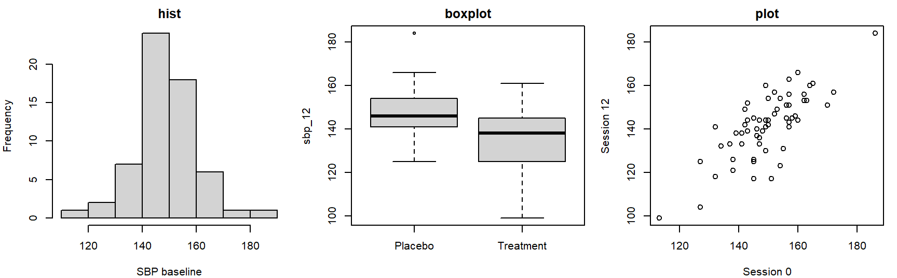

par(mfrow = c(1, 3), mar = c(4, 4, 2, 1))
hist(trial$sbp_0, main = "hist", xlab = "SBP baseline")
boxplot(sbp_12 ~ arm, data = trial, main = "boxplot", xlab = "")
plot(trial$sbp_0, trial$sbp_12, main = "plot", xlab = "Session 0",
ylab = "Session 12")